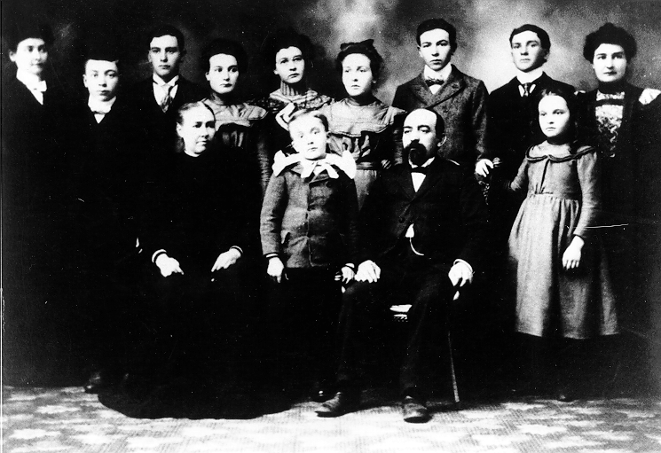

The Immigrant Luxembourger
Experience
in America
The Family of
Margaret Mans and John Peter
Ney


Back row: (left to right) Josephine, William,
Edward, Mary, Caroline, Anna, Nicholas, Emil, Katherine.
Front row:
Margaret Mans Ney, Joseph, John Peter Ney, Rose.
Circa 1899-1900,
Holy
Cross, Wisconsin.
 Table of Contents
Table of Contents 
Chapter
- Introduction
- Luxembourg - Gibraltar of the North
Chronology of
Luxembourg History
- Auswanderer Nach Amerika
- "On Wisconsin"
Chronology of
Wisconsin History
- Margaret Mans and John Peter Ney
- Children of Margaret Mans and John Peter Ney
Josephine Ney Mannebach
(1877-1933)
Katherine Ney Mannebach
(1878-1943)
Caroline Rose Ney (Sister Mary
Salome, O.P., 1879-1929)
Emil Nicholas Ney (1881-1943)
Nicholas Ney (1883-1966)
Edward Ney (1884-1975)
Mary Katherine Ney Kultgen
(1885-1963)
Anna Marie Ney Stern
(1886-1968)
William Paul Ney (1888-1970)
Rose Catherine Ney Stern
(1890-1989)
Joseph George Ney (1891-1960)
Last Updated: 14 November 1998
Lisa Oberg ||
lisanne@eskimo.com ||
www.eskimo.com/~lisanne